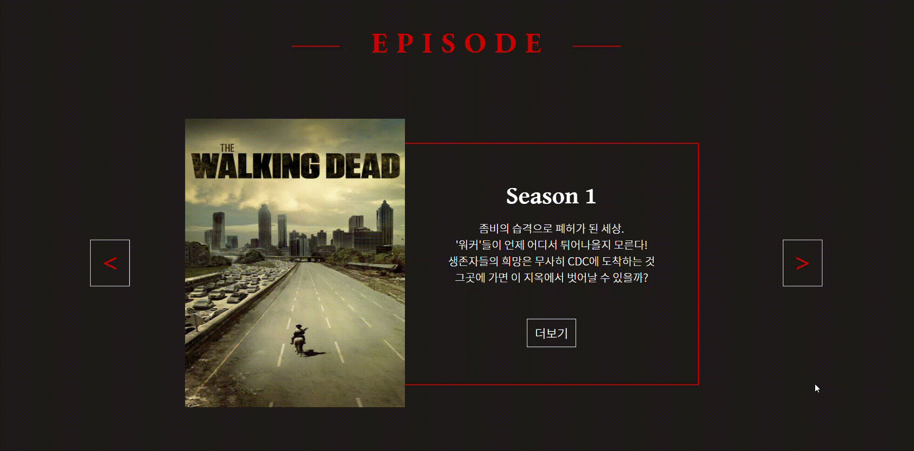
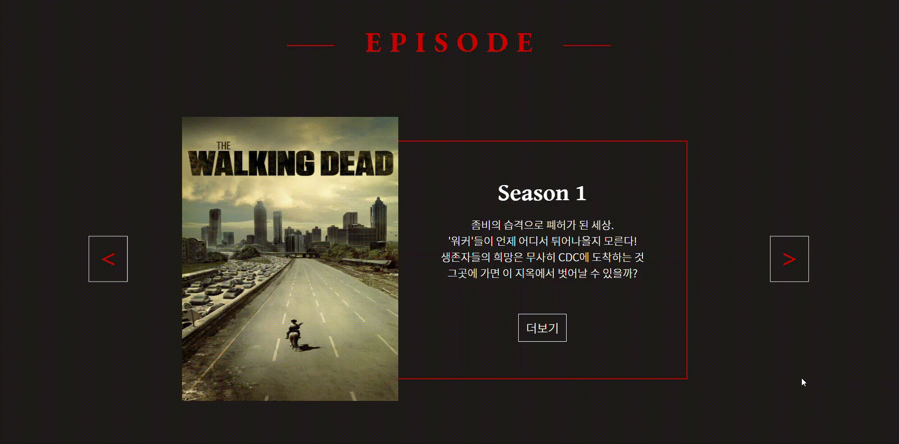
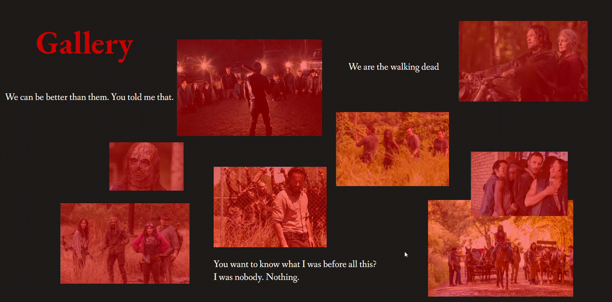
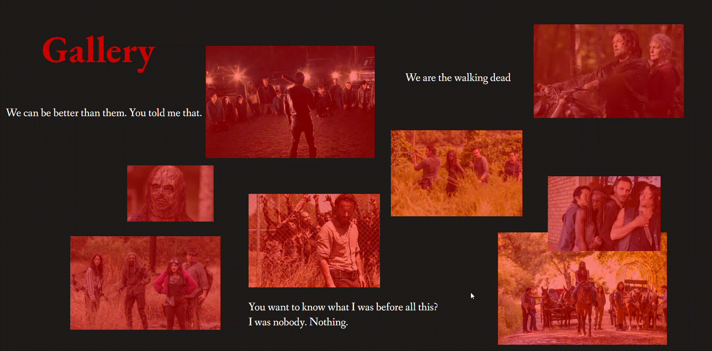

Typography & main color
- Noto Sans KR
가 Aa
- EB Garamond
Walking Dead
-
#cc0000
-
#1F1B19
-
#FFFFFF
comment
제가 평소에 좋아하는 미국드라마 '워킹데드'를 주제로 만들어봤다.
풀스크린으로 총 5페이지를 제작하였다.
메인컬러로는 좀비하면 생각나는 피의 붉은 이미지와 어두운배경으로 선택하였다.
첫번째 페이지 - 메인페이지로 동영상을 삽입하여 집중 할 수 있게 만들었다.
두번째 페이지 - 에피소드소개, 좌우버튼 클릭시 슬라이드형식으로 넘어간다
세번째 페이지 - 인물소개, 앞면에서는 드라마 속 이름과 배우 이름을 나타내고 뒷면은 인물을 소개한다.
네번째 페이지- 예고편 소개. 왼쪽 두 박스를 클릭하면 youtube페이지로 연결된다.
다섯번째 페이지 - 워킹데드 갤러리
 


 
